Your profile and visit history
My World Heritage keeps your profile, Name, home settings and visit history in this browser's local storage. Reopening the same site in the same browser profile retains them. A different device, browser profile or private-browsing session does not automatically share this history. Clearing browser site data can remove it.
Use the user menu to open Settings, export your profile or import a saved profile. Export creates a .profile backup containing personal information; keep it somewhere appropriate. Import loads a profile, including its settings. Export before replacing a profile if you need to keep the current history. Logout disconnects the current page without deleting the saved profile. Reset removes the local profile; it does not recall exported files or delete reports already accepted by the reporting service.
Select a site to record visits, dates, status and notes. These personal edits do not change the shared UNESCO catalogue. Catalogue updates arrive through the maintained site distribution; the register identifies active and retired sites.
Browsing and searching
Search finds matching catalogue sites and geographic locations. A region search frames the region; multiple site matches are fitted into view. Eligible sites in the resulting viewport are temporarily revealed even when a filter would normally hide them. Moving or zooming the map restores normal visibility. Selecting an individual site also reveals it until the next viewport change. These actions do not mark sites as visited or change saved filters. Opening a site records local inspection activity but does not create a visit. Startup increases the local usage counter. Searching does not by itself publish a usage report.
Site titles follow UNESCO's English catalogue; component titles use the recorded component name, retaining accents and original scripts. Other-language translations are available through the linked UNESCO page. The app does not infer or append a local name from a translation.
Country searches match country names in the register, including alternative names supplied by the place service. Components use their own country attribution. When a multi-country property has components in the selected country, those components replace its overall record in the search results. The overall property remains available by name or identifier. Searches within a country use the place's rectangular bounds, so a city or region result may include nearby sites in the same country. If a place's country cannot be matched, choose another result or use the country name shown in the register.
The catalogue comes from the site distribution. Map tiles and geographic searches use external providers, which receive the requested tile coordinates or search text and ordinary request metadata. Local storage does not make those requests private from their providers.
Summaries and reporting reminders
Summary in the user menu produces a personal report. Submit sends a statistical usage summary to the configured reporting service. The two operations serve different purposes.
A usage submission includes your profile Name, a pseudonymous profile identifier, the visited-site count, usage count, timestamp, report type and client version. The default service does not receive your individual visit list, notes or home location in that summary. The Name is the same Name maintained in Settings; there is no separate reporting alias.
Creating a profile sends an initial adoption summary. Periodic reporting is opt-in: enable it under Settings → Usage summary. It prompts you to submit; the reminder timer does not silently send periodic reports. You can also choose Submit manually.
The envelope is a time-based reporting reminder, not an indication that the site register or your visits changed. While connected and opted in, the client checks whether a report is due every 15 seconds. It also checks on startup and can open the submission dialog then. A report is due when no prior reminder time is saved, or when the configured interval has elapsed since an accepted submission. Browsing without changing visits does not postpone the reminder.
The interval is measured in days and accepts fractions. For example, 0.0002 days is 17.28 seconds, so the next 15-second check can show the envelope within a minute of a successful report. This is useful for testing. Set 15 for fifteen days and save Settings for ordinary use; the default for a new profile is seven days. Selecting None disables periodic reminders, while manual submission remains available. A longer interval takes effect against the saved reminder time; it does not require another submission.
An accepted manual, periodic or adoption submission resets the reminder and hides the envelope. A retry acknowledged as already accepted also counts as receipt. A failed request or clipboard fallback does not confirm receipt and does not reset the reminder. A timeout can leave acceptance uncertain: retry the saved submission rather than assuming it was lost. The client keeps its receipt identifier to avoid counting the same submission twice.
The reminder time persists across reloads. Updated tabs reconcile the saved time for the same profile; refresh older tabs after an application update. Tabs on another browser or device have separate storage. Detailed simultaneous profile edits are not a cloud synchronisation service.
Settings shows the destination address. A blank address restores the current default when saved; startup also fills an empty setting. A recognised previous default migrates to the current server. A custom address remains your override, so check it before submitting. Settings also shows the last submission outcome.
The application dialog
Select the My World Heritage title button to view the application information, help and usage chart. The dialog can open automatically after one minute without interaction following startup. This help prompt is separate from the reporting envelope.
Sites visited by users uses the latest report from each known reporting profile, regardless of age, excluding marked test and synthetic records. Ten ranges scale to the data. Visited sites is the horizontal axis; Relative frequency is the unnumbered vertical axis. A reporting profile is not a verified unique person. The chart is a population summary, not your personal visit total.
Invite someone to My World Heritage opens your configured mail client with an invitation and the public site address. Choose the recipient and send it yourself. The link neither sends automatically nor includes your profile or visit history.
Screenshots and control reference
These desktop screenshots use an example profile and synthetic monitoring results. They show the application, its dialogs and downloaded report. Map data and credits remain those of the map provider. Your content, available controls and browser layout can differ. Select a screenshot to view it at full size. Escape closes transient panels and dialogs when no active submission prevents dismissal.
Choose a screen:
Map and site list
Figure Map and site list shows this view. Table Map and site list controls describes its controls and displayed information.
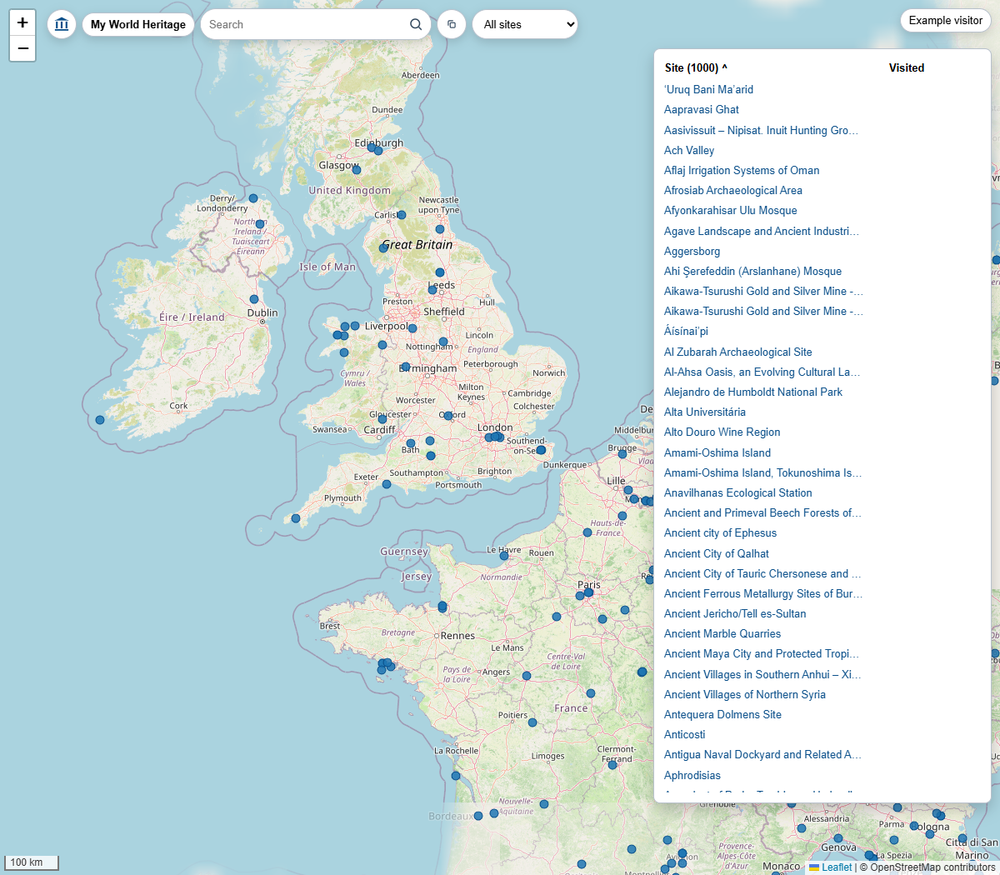
| Control or information | Contents | Behaviour |
|---|---|---|
| Map | Catalogue markers and map tiles | Drag to pan; scroll or use zoom buttons to zoom; select a marker to open its site |
| Zoom + / − | Current map scale | Zoom in or out |
| Scale and attribution | Distance scale and map-provider credits | Scale follows zoom and length units; attribution links open provider information |
| Symbol | Public-domain My World Heritage mark | Hover or focus for the reuse tooltip |
| My World Heritage title | Application title | Open the application dialog |
| Search field and magnifier | Site name, country, identifier or place query | Enter text and press Enter or select Search |
| Snapshot image | Copy icon | Capture the map image to clipboard where supported, otherwise download PNG |
| Site-list selector | Blank, All sites, Multiple sites, Visited sites or Searched sites | Choose which list to show; blank hides the list |
| Site / Visited headings | List count, sort direction and visit dates | Select a heading to toggle sorting |
| Site rows | Site name and latest visit date | Select a row to bring the site into view and open its detail |
| Envelope and dot | A due reporting reminder, when enabled | Open a due usage summary; this is based on elapsed time, not changes |
| User button | Profile Name or Guest | Open the user menu |
| Loading indicator | Current loading operation, when active | Read progress; it is not a button |
Search results
Figure Search results shows this view. Table Search results controls describes its controls and displayed information.
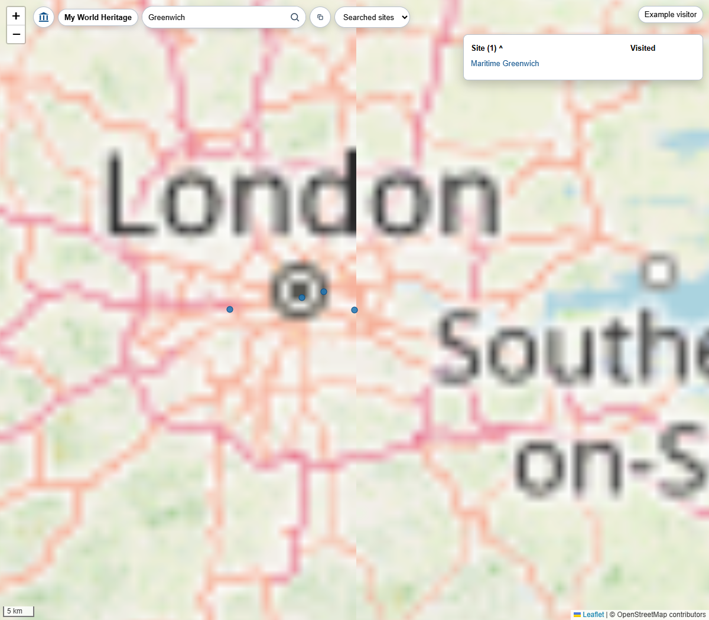
| Control or information | Contents | Behaviour |
|---|---|---|
| Search text | Entered query | Edit and search again; Escape hides results |
| Result rows | Matching catalogue sites or geographic places, with identifying detail | Select a site to open its record, or a place to move the map |
| Empty search | No query | Submitting an empty query clears search results and search-specific visibility |
Enrolment
Figure Enrolment shows this view. Table Enrolment controls describes its controls and displayed information.
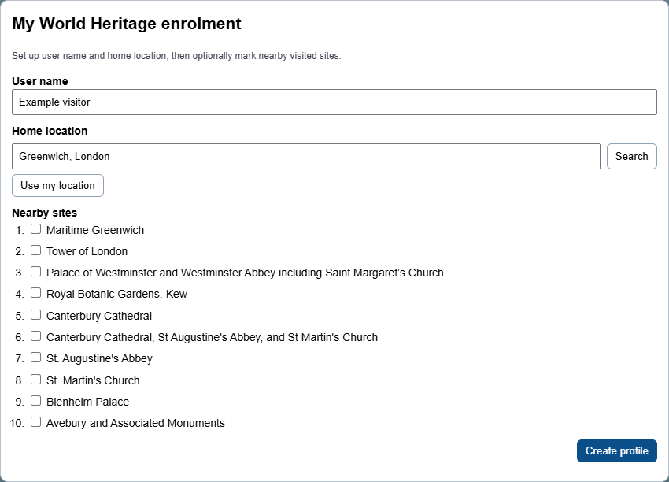
| Control or information | Contents | Behaviour |
|---|---|---|
| User name | Your Name, up to 80 characters | Set the Name used locally and in submitted usage summaries |
| Home location | Search text and selected place | Enter a place; choose a matching suggestion |
| Search and suggestions | Geographic matches | Find and select the intended home place |
| Use my location | Device position, subject to browser permission | Set the home location from geolocation |
| Location status | Search/location progress or error | Read the outcome |
| Nearby-site checkboxes | Suggested sites near home | Optionally mark initial visited sites |
| Create profile | Entered Name, selected home and chosen sites | Save the local profile and send the initial adoption summary |
Site details and visit log
Figure Site details and visit log shows this view. Table Site details and visit log controls describes its controls and displayed information.
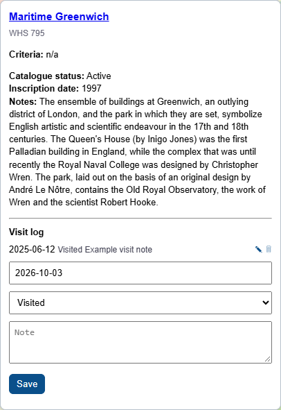
| Control or information | Contents | Behaviour |
|---|---|---|
| Site title | Catalogue name linked to UNESCO | Open the source record |
| Site identifier and catalogue status | Stable identifier and Active or Retired | Read register identity; retired entries remain available for personal history |
| Criteria links | UNESCO selection criteria | Open criteria definitions |
| Catalogue information | Location, country and other available details | Read the selected site description |
| Visit log | Recorded dates, statuses and notes | Review personal visit entries |
| Edit | Existing visit entry | Load it into the visit editor |
| Delete | Existing visit entry | Remove that personal entry |
| Visit date | YYYY-MM-DD, YYYY-MM or YYYY | Enter a date; Enter saves |
| Visit status | Visited, Pending, Won’t visit or Not visited | Choose the entry status |
| Note | Personal free text | Enter a note; Enter saves, Shift+Enter adds a line |
| Save | Current editor contents | Save the entry locally; this does not change the shared catalogue |
Editing a visit
Figure Editing a visit shows this view. Table Editing a visit controls describes its controls and displayed information.
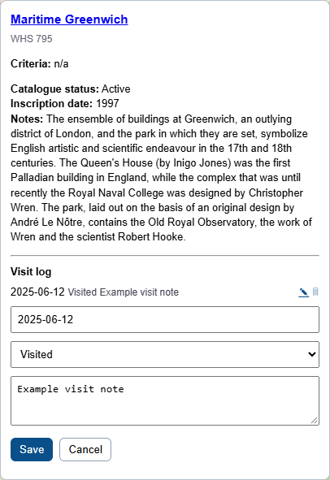
| Control or information | Contents | Behaviour |
|---|---|---|
| Date, status and note | Values from the selected existing entry | Change them before saving |
| Save | Edited entry | Replace that visit entry |
| Cancel | Shown while editing | Return to the new-entry editor without saving edits |
Settings
Figure Settings shows this view. Table Settings controls describes its controls and displayed information.
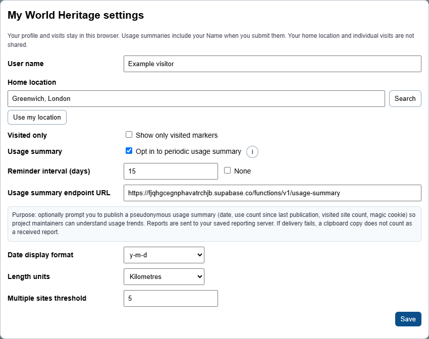
| Control or information | Contents | Behaviour |
|---|---|---|
| User name | Existing profile Name | Edit the one Name attribute; there is no separate reporting alias |
| Home location / Search / suggestions | Current home and matching places | Search for and select a replacement |
| Use my location / status | Device location request and outcome | Use the browser geolocation permission flow |
| Visited only | Show only visited markers | Filter ordinary map redraws; explicit site selection can temporarily reveal a hidden site |
| Opt in to periodic usage summary | Reminder opt-in | Enable time-based prompts; does not automatically send periodic reports |
| Information button | Usage-summary explanation | Show or hide the explanation |
| Reminder interval (days) | Positive days, including fractions | Set elapsed time between accepted reports; 0.0002 means 17.28 seconds; 15 means fifteen days |
| None | Periodic reminders disabled | Suppress periodic reminders while keeping manual submission available |
| Usage summary endpoint URL | Saved destination server | Override the destination; clear and save to restore the current default |
| Last submission status | Saved outcome and timestamp, when present | Read the most recent submission result |
| Date display format | y-m-d, d-m-y or m-d-y | Choose how dates display |
| Length units | Kilometres or Miles | Choose distance units |
| Multiple sites threshold | Positive component-count threshold | Control grouping of large multi-component sites |
| Save | All settings in the dialog | Validate and persist the changes |
Usage submission
Figure Usage submission shows this view. Table Usage submission controls describes its controls and displayed information.
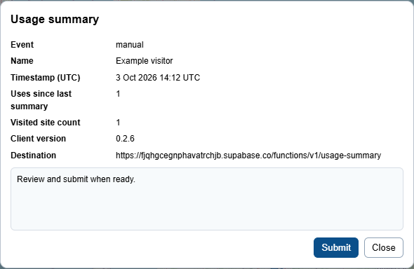
| Control or information | Contents | Behaviour |
|---|---|---|
| Event | adoption, manual or periodic | Read the report type |
| Name | Current profile Name or Not supplied | Read the Name being sent; change it in Settings |
| Timestamp (UTC) | Report capture time | Read the time associated with the pending report |
| Uses since last summary | Captured unpublished usage count | Read the count; later usage remains for a later report |
| Visited site count | Count of visited sites | Read the aggregate; individual visit entries are not in this summary |
| Client version | Application version | Identify the reporting client |
| Destination | Configured reporting URL | Check the recipient service |
| Status panel | Ready, sending, received or failure information | Read the submission outcome |
| Submit | Prepared summary and stable receipt Id | Send the pending report; disabled while sending |
| Close | Dialog dismissal | Close when no send is blocking dismissal |
Submission outcome
Figure Submission outcome shows this view. Table Submission outcome controls describes its controls and displayed information.
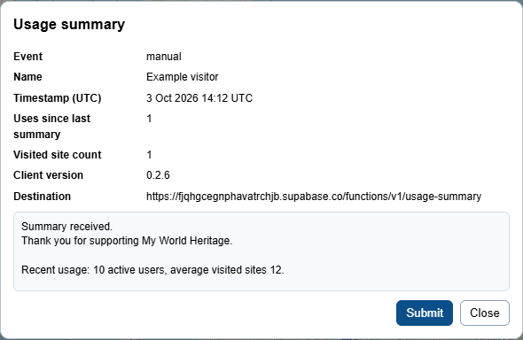
| Control or information | Contents | Behaviour |
|---|---|---|
| Outcome panel | Receipt, duplicate, timeout, error or clipboard fallback | An accepted receipt resets the reminder; clipboard fallback does not confirm receipt |
| Submit | Already sent request | Remains disabled after this attempt; reopen Submit for a further attempt |
| Close | Available after completion or timeout | Return to the map; a pending uncertain submission is retained for retry |
Application dialog
Figure Application dialog shows this view. Table Application dialog controls describes its controls and displayed information.
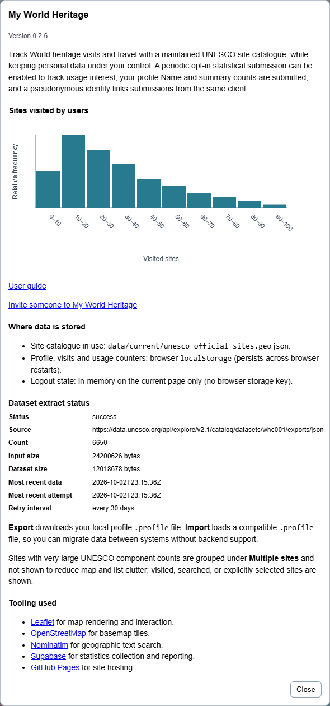
| Control or information | Contents | Behaviour |
|---|---|---|
| Version and introduction | Application version and purpose | Read product context |
| Sites visited by users | Ten scaled visited-site ranges with relative-frequency heights | View latest-per-profile aggregates; values in this guide are synthetic |
| User guide | This document | Open it in a separate tab |
| Invite someone | Email invitation link | Open a prefilled mail draft; choose the recipient and send yourself |
| Where data is stored | Catalogue, local profile and logout-state descriptions | Read the storage explanation |
| Dataset extract status | Status, source URL, record count, input/dataset sizes, most recent data/attempt times and retry interval, or unavailable | Inspect the dataset currently in use |
| Tooling links | Leaflet, OpenStreetMap, Nominatim, Supabase and GitHub Pages | Open component/provider information |
| Close | Dialog dismissal | Return to the map |
Symbol information
Figure Symbol information shows this view. Table Symbol information controls describes its controls and displayed information.
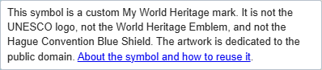
| Control or information | Contents | Behaviour |
|---|---|---|
| Symbol tooltip | Meaning and public-domain declaration | Read how the custom mark differs from official marks |
| About the symbol and how to reuse it | Symbol document link | Open the artwork description and licence declaration |
Downloaded personal summary
Figure Downloaded personal summary shows this view. Table Downloaded personal summary controls describes its controls and displayed information.
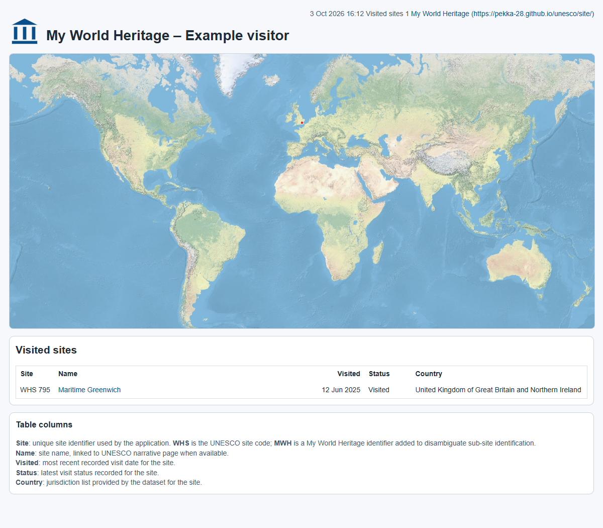
| Control or information | Contents | Behaviour |
|---|---|---|
| Title and generation details | Profile Name, generation time and visited total | Identify the exported report |
| My World Heritage links | Public application address | Open the application |
| World map | Visited-site locations | View the static map; it has no interactive zoom controls |
| Visited-sites table | Site identifier, linked Name, latest visit date, status and country | Review the personal report; Name links open UNESCO records |
| Table-column notes and attribution | Column definitions and map credits | Read interpretation and source information |
Browser and operating-system dialogs
File selection, download handling, location permission, clipboard permission, email composition, reset confirmation and error alerts use browser or operating-system UI. They are not application-rendered pages and vary by browser; the screenshots above therefore do not depict them. Table Browser dialogs identifies their controls.
| Dialog | Controls and contents | Effect |
|---|---|---|
| Import file picker | File selection, Open and Cancel | Open supplies the selected .profile file; Cancel leaves the current profile |
| Download | Filename, destination and browser Save/Cancel controls | Creates a separate file if retained; exporting does not remove local data |
| Location or clipboard permission | Browser permission prompt, allow/deny options | Permits or refuses that device capability; refusal can produce an error or fallback |
| Reset confirmation | Reset local test data and reload?; OK and Cancel | OK removes profile/census and reloads; Cancel leaves them |
| Error or completion alert | Message and dismissal button | Acknowledges a validation, import, connection or snapshot outcome |
| Invitation mail draft | Recipient, subject, body and mail-client Send/Discard controls | You choose whether and to whom to send |